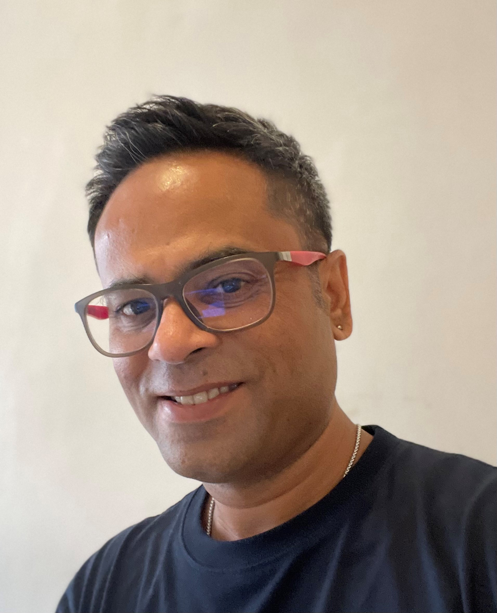
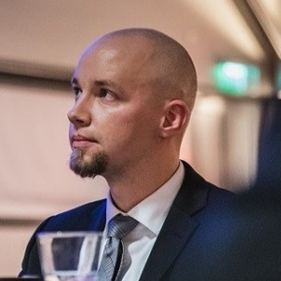

DataEd 2023 Program
The detailed program will be announced later.
Keynotes
We're very happy to announce to you our two keynote speakers: Sourav Bhowmick and Toni Taipalus. Read more about their talks below!
Sourav Bhowmick
Human Learners of Relational Query Processing: Who Cares?There is an increasing attention on lifelong learning of data-related topics primarily due to the data-driven world and rapidly changing technological landscape. This has increased the importance of database-related courses in recent times. One of the key learning goals of adult learners taking a database systems course is to understand how SQL queries are processed in an RDBMS in practice. Most database courses supplement traditional modes of teaching with off-the-shelf RDBMS to provide hands-on opportunities to learn database concepts used in practice. Notably, the data management community has traditionally directed their attention primarily to the needs of enterprise users rather than of learners. Consequently, these RDBMS are not designed for effective and efficient pedagogical support. In this keynote, we present a vision that calls for action to direct some of our attention to learners in order to build effective and efficient technological support to supplement learning of relational query processing. We focus on research challenges in this novel space that are motivated by challenges faced by real-world learners and discuss state-of-the-art tools and techniques that are deployed in practice to mitigate some of them. We identify opportunities for the data management community to make database education data-driven as well as opportunities to create technologies that are inclusive, i.e., facilitating special-needs adults (e.g., learners with autism spectrum disorder (ASD)) to learn database systems. In summary, realizing our vision has tremendous potential of real-world impact on something that is very personal to us – education.
Bio: Sourav S. Bhowmick is an Associate Professor in the School of Computer Science and Engineering (SCSE), Nanyang Technological University, Singapore. His core research expertise is in data management, human-data interaction, and data analytics. His research has appeared in premium venues such as ACM SIGMOD, VLDB, and VLDB Journal. He is co-recipient of Best Paper Awards in ACM CIKM 2004, ACM BCB 2011, and VLDB 2021. He is also co-recipient of the 2021 ACM SIGMOD Research Highlights Award. Sourav is serving as a member of the SIGMOD Executive Committee, a regular member of the PVLDB advisory board, and a co-lead in the committee for Diversity and Inclusion in Database Conference Venues. He is a co-recipient of several service awards including VLDB Service Award in 2018, Distinguished AE Award in SIGMOD 2021 and VLDB 2022, and Distinguished Reviewer Award in 2020. He is the inventor of CLOSET. Sourav was inducted into Distinguished Members of the ACM in 2020. He is a strong advocate of research that directly or indirectly impacts end users.
Toni Taipalus
SQL: A Trojan Horse Hiding a Decathlon of ComplexitiesDespite its age, SQL is still a widely sought skill among software developers and data engineers, which makes learning SQL a tempting prospect. Several online courses and tutorials may even inspire learners by stating that SQL is a simple and easy language to learn. This impression might also be strengthened by looking at simple SQL statements that read close to English, in contrast to most programming languages. In this keynote, I will present ten complexities hiding behind SQL's initial appeal, and my experiences and possible solutions in mitigating these complexities in data systems education.
Bio: Toni Taipalus (PhD) is a teacher and a researcher at University of Jyväskylä, Finland. He completed his PhD in information systems, focusing on query language education. Currently, he is bridging the gap between database management systems and human-computer interaction with the goal of facilitating data systems education.